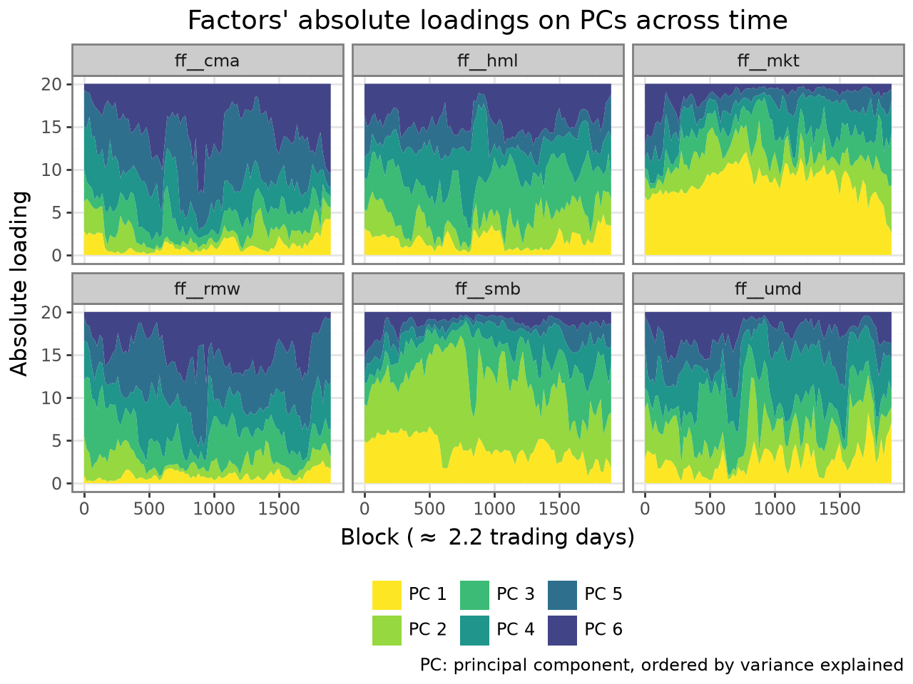

plot_loadings()
Plot the loading contribution between variables and principal components over time.
Usage
plot_loadings(
pca,
exp=1,
merge_blocks=1,
)The absolute loadings are normalized to [0-1] each block-variable pair. Then, in a pannel for each original variable, a plot of the time serie of loadings for each principal component is plotted. This shows how a variable contributed to each PC over time. A high contribution to the first PCs indicates high variance explanatory power.
Example with high-frequency factor zoo data from Aleti 2022:

Parameters
pca: PCAHighFreqResult-
The result of pca_high_freq.
exp: float = 1-
Exponent applied to the absolute loadings before normalization. Higher values emphasize the dominant loading components.
merge_blocks: int = 1-
Number of blocks to merge (sum) in a single observation for plotting. This is useful to reduce the number of points in the plot and improve visibility.
Returns
ggplot-
A [ggplot][plotnine.ggplot] object. Print the object to show the plot,
or save it with
plotnine.ggsave. Modifications can be made by addingplotnine calls to the result:
plot_loadings(...) + plotnine.*(...).